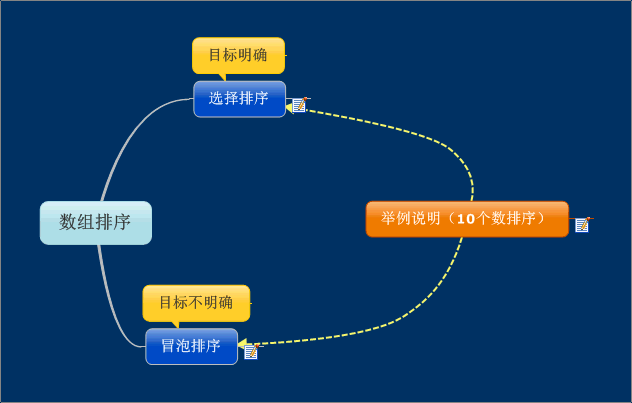
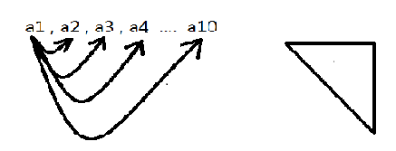
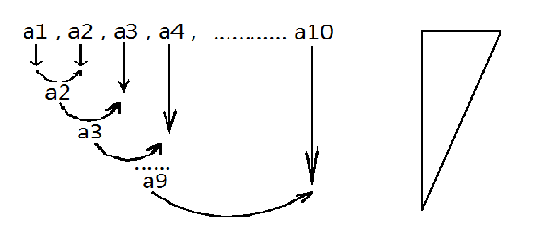

举例说明：
拿第一个数分别与其他的数去比较，取出最大或最小，将结果放在第一个数中，然后在拿第二个数与剩下的数比较，以此类推
相邻的数两个两个的比较，取两个数的最大或最小，将结果放在a1或a2中并与第三个数比较，以此类推
选择排序：
大到小：
用第一个数与其余9个数去比较将最大的放在a1中，然后a2在与剩下的8个数比较将次大的数放在a2中，依次类推（先选出最大的）
冒泡排序：
大到小：
相邻两个数进行比较，找出最小的放在a2中，然后再拿a2与a3比较，找出最小的放在a3中，依次类推，（先选出最小的）